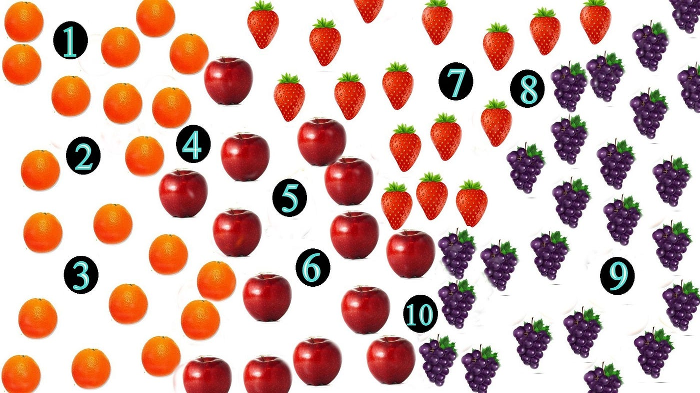

In this Python Jupyter Notebook project, I cleaned and explored data, then applied logistic regression to predict survival on the Titanic ship based on gender, age, boarding location and travel status.
In this data cleaning project utilizing SQL Server, I worked with the latest Nashville housing records. I imported the data into SQL, addressed null values, removed duplicates, trimmed unnecessary columns, and split addresses into separate components (address, city, and state) for enhanced analysis.
In this SQL Server data exploration project, I acquired the latest COVID data, imported it, and organized it in ascending order. I delved into statistics, examining vaccinated, death and case numbers, then compared countries and continents data. I analyzed total cases, vaccinations, new cases, and deaths, comparing current and past data. Utilizing CTEs and temp tables, I looked into the percentage of the population that has been vaccinated then used views to create a comprehensive visual analysis of the dataset.

In this correlation project in R, I compared the Kendall, Spearman, and Pearson correlation methods on the built-in 'Iris' dataset. By examining their results, I determined which method was the most accurate for this specific dataset. I also provided visual insights by creating scatter plots to showcase the relationships within the data.
In this Python Jupyter Notebook project using a movies dataset, I conducted a comprehensive analysis. I began by identifying and addressing missing data, converting superfluous float datatypes to integers, and ranking movies by score. Then, I performed a correlation analysis using the Spearman method and visually represented the results with a heatmap. Through scatter plots and regression models, I provided insights gleaned from the correlation matrices, shedding light on key relationships within the dataset.

In this Python Jupyter Notebook project, I embarked on a K-Nearest Neighbors (KNN) fruit prediction task. After data cleaning and exploratory analysis, I summarized the dataset's statistics, counted fruit entries, and examined data types. Visualizing the fruit distribution, I structured the data into four distinct data frames with unique fruit labels for clarity. Using KNN, I trained a classifier and assessed its accuracy. Ultimately, I made fruit predictions based on mass, width, and height parameters.
In this Python Jupyter Notebook project, I employed K-Means clustering for customer segmentation. Leveraging age, income, and spending habits as key features, I categorized customers into distinct groups, offering valuable insights for targeted marketing and personalized customer engagement.